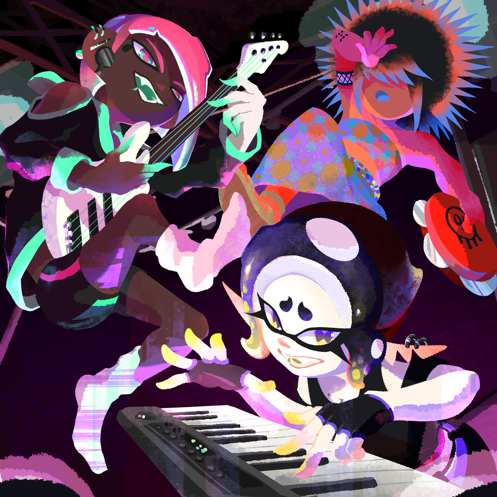
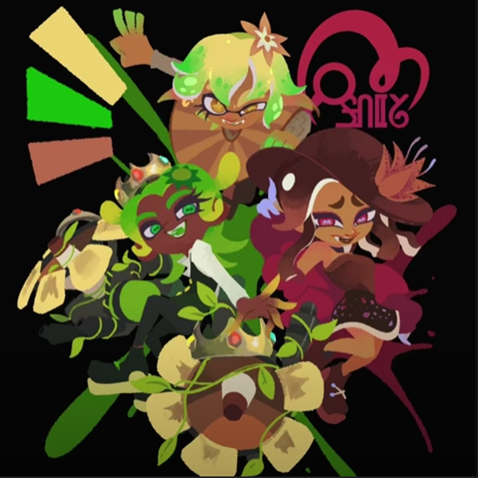

I composed music for Trench.
Trench is riji monogatari's fanmade Splatoon band. I've made a few tracks for them. Consider checking them out !
I started making music since early 2018. My first beats were on Magix Music Maker Jam (basically a free app that lets you use pre-recorded loops and play them on the go). I started getting into FL Studio at the end of 2022, but I made some... questionable beats back then. But now, thanks to a LOT of tutorials and trial and error, my production quality keeps getting better.
If you're asking : "But what type of genres are you specialised in ?" Well, the answer is pretty much everything, although I have a massive bias towards electronic/experimental music and ambient.
I can create music suitable for video games, short films or any sort of project that needs music.

Trench is riji monogatari's fanmade Splatoon band. I've made a few tracks for them. Consider checking them out !

SATUR-8 is a fanmade Splatoon project featuring a collab between the fictional bands Trench, Octoprism and Trilight for an event called Inkfinity Fest. I have composed and arranged their cover of Three Wishes. I've also made quite a few other tracks in a playlist linked below.
This is what I usually use in my workflow.
FL Studio 2025 All Plugins Edition (daily driver DAW) ; Logic Pro 11 (sometimes)
Stock FL Studio plugins, CamelCrusher, iZotope Ozone 10/11, Kilohearts Essentials, Guitar Rig 7, Chroma, etc.
Native Instruments Komplete Kontrol M32, Novation Launchpad Mini MK3, Focusrite Scarlett Solo 3rd generation, Yamaha PSR-E263
Omnisphere 3, Serum 2, NI Massive, Battery 4, Kontakt 7, Trilian, Keyscape, VPS Avenger, Addictive Drums 2, KORG bundle, Roland Cloud, etc.
Impact Soundworks Shreddage 2, Kontakt Factory Library, NI Noire, Heavyocity Damage 2, Evolve R2, etc.
Zero-G Chemical Beats, Apple Loops, Best Service Phantom Files Vol.1, Vengeance Essential Effects Vol. 1, etc.
COMMISSION STATUS : OPEN !!!
If you have any questions, you can contact me on Discord or via my contact email. I usually answer decently fast. Links and email address can be found at the very bottom of the page.
You can contact me on Discord : lumiflag
- 1 minute song : 60 €
- 2 minute song : 90 €
- 3 minute song : 150 €
- Beyond 3 minutes : + 40 €/min
- Simple jingle : 25 €
- Complex jingle : 70 €
Pay via PayPal or Ko-fi.
My music is under a Creative Commons license (CC BY-NC-SA 4.0 DEED, details here). You will not use any of my tracks for commercial purposes without asking me beforehand, nor without crediting me. Do not steal my tracks or use them to train any kind of AI.
I will provide the music AFTER PAYMENT and share previews while working so we can discuss what to do next. I will upload a high-quality, uncompressed .wav file or other formats if asked.
I reserve the right to refuse your request if I don't feel comfortable doing it (mostly NSFW). Once payment has been processed, ABSOLUTELY NO REFUNDS WILL BE ALLOWED.
If you commission me and aren't satisfied with the result after payment, it is not my responsibility anymore, but yours. Communication is important.
By requesting my services, you acknowledge having read all of this and agree to these conditions.